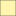

<!doctype html>
<html lang="en">
    <head>
        <meta charset="utf-8">
        <meta http-equiv="X-UA-Compatible" content="IE=edge">
        <meta name="viewport" content="initial-scale=1,user-scalable=no,maximum-scale=1,width=device-width">
        <meta name="mobile-web-app-capable" content="yes">
        <meta name="apple-mobile-web-app-capable" content="yes">
        <link rel="stylesheet" href="css/leaflet.css"><link rel="stylesheet" href="css/L.Control.Locate.min.css">
        <link rel="stylesheet" href="css/qgis2web.css"><link rel="stylesheet" href="css/fontawesome-all.min.css">
        <link rel="stylesheet" href="css/leaflet-search.css">
        <link rel="stylesheet" href="css/leaflet-control-geocoder.Geocoder.css">
        <link rel="stylesheet" href="css/leaflet-measure.css">
        <style>
        #map {
            width: 1199px;
            height: 807px;
        }
        </style>
        <title>sxaxdsadxsad</title>
    </head>
    <body>
        <div id="map">
        </div>
        <script src="js/qgis2web_expressions.js"></script>
        <script src="js/leaflet.js"></script><script src="js/L.Control.Locate.min.js"></script>
        <script src="js/leaflet.rotatedMarker.js"></script>
        <script src="js/leaflet.pattern.js"></script>
        <script src="js/leaflet-hash.js"></script>
        <script src="js/Autolinker.min.js"></script>
        <script src="js/rbush.min.js"></script>
        <script src="js/labelgun.min.js"></script>
        <script src="js/labels.js"></script>
        <script src="js/leaflet-control-geocoder.Geocoder.js"></script>
        <script src="js/leaflet-measure.js"></script>
        <script src="js/leaflet-search.js"></script>
        <script src="data/Buildingfootprint_1.js"></script>
        <script src="data/Roadwidthexpansion_2.js"></script>
        <script src="data/Roads_3.js"></script>
        <script src="data/Removedportions_4.js"></script>
        <script>
        var highlightLayer;
        function highlightFeature(e) {
            highlightLayer = e.target;

            if (e.target.feature.geometry.type === 'LineString') {
              highlightLayer.setStyle({
                color: '#ffff00',
              });
            } else {
              highlightLayer.setStyle({
                fillColor: '#ffff00',
                fillOpacity: 1
              });
            }
        }
        var map = L.map('map', {
            zoomControl:true, maxZoom:28, minZoom:2
        }).fitBounds([[30.286287807852606,77.9885226278525],[30.34929848137725,78.09430918507046]]);
        var hash = new L.Hash(map);
        map.attributionControl.setPrefix('<a href="https://github.com/tomchadwin/qgis2web" target="_blank">qgis2web</a> &middot; <a href="https://leafletjs.com" title="A JS library for interactive maps">Leaflet</a> &middot; <a href="https://qgis.org">QGIS</a>');
        var autolinker = new Autolinker({truncate: {length: 30, location: 'smart'}});
        L.control.locate({locateOptions: {maxZoom: 19}}).addTo(map);
        var measureControl = new L.Control.Measure({
            position: 'topleft',
            primaryLengthUnit: 'meters',
            secondaryLengthUnit: 'kilometers',
            primaryAreaUnit: 'sqmeters',
            secondaryAreaUnit: 'hectares'
        });
        measureControl.addTo(map);
        document.getElementsByClassName('leaflet-control-measure-toggle')[0]
        .innerHTML = '';
        document.getElementsByClassName('leaflet-control-measure-toggle')[0]
        .className += ' fas fa-ruler';
        var bounds_group = new L.featureGroup([]);
        function setBounds() {
        }
        map.createPane('pane_OpenStreetMap_0');
        map.getPane('pane_OpenStreetMap_0').style.zIndex = 400;
        var layer_OpenStreetMap_0 = L.tileLayer('https://tile.openstreetmap.org/{z}/{x}/{y}.png', {
            pane: 'pane_OpenStreetMap_0',
            opacity: 1.0,
            attribution: '',
            minZoom: 2,
            maxZoom: 28,
            minNativeZoom: 0,
            maxNativeZoom: 19
        });
        layer_OpenStreetMap_0;
        map.addLayer(layer_OpenStreetMap_0);
        function pop_Buildingfootprint_1(feature, layer) {
            layer.on({
                mouseout: function(e) {
                    for (i in e.target._eventParents) {
                        e.target._eventParents[i].resetStyle(e.target);
                    }
                },
                mouseover: highlightFeature,
            });
            var popupContent = '<table>\
                    <tr>\
                        <td colspan="2">' + (feature.properties['Build_code'] !== null ? autolinker.link(feature.properties['Build_code'].toLocaleString()) : '') + '</td>\
                    </tr>\
                </table>';
            layer.bindPopup(popupContent, {maxHeight: 400});
        }

        function style_Buildingfootprint_1_0() {
            return {
                pane: 'pane_Buildingfootprint_1',
                opacity: 1,
                color: 'rgba(35,35,35,1.0)',
                dashArray: '',
                lineCap: 'butt',
                lineJoin: 'miter',
                weight: 1.0, 
                fill: true,
                fillOpacity: 1,
                fillColor: 'rgba(0,0,0,0.5098039215686274)',
                interactive: true,
            }
        }
        map.createPane('pane_Buildingfootprint_1');
        map.getPane('pane_Buildingfootprint_1').style.zIndex = 401;
        map.getPane('pane_Buildingfootprint_1').style['mix-blend-mode'] = 'normal';
        var layer_Buildingfootprint_1 = new L.geoJson(json_Buildingfootprint_1, {
            attribution: '',
            interactive: true,
            dataVar: 'json_Buildingfootprint_1',
            layerName: 'layer_Buildingfootprint_1',
            pane: 'pane_Buildingfootprint_1',
            onEachFeature: pop_Buildingfootprint_1,
            style: style_Buildingfootprint_1_0,
        });
        bounds_group.addLayer(layer_Buildingfootprint_1);
        map.addLayer(layer_Buildingfootprint_1);
        function pop_Roadwidthexpansion_2(feature, layer) {
            layer.on({
                mouseout: function(e) {
                    for (i in e.target._eventParents) {
                        e.target._eventParents[i].resetStyle(e.target);
                    }
                },
                mouseover: highlightFeature,
            });
            var popupContent = '<table>\
                    <tr>\
                        <td colspan="2">' + (feature.properties['osm_id'] !== null ? autolinker.link(feature.properties['osm_id'].toLocaleString()) : '') + '</td>\
                    </tr>\
                    <tr>\
                        <td colspan="2">' + (feature.properties['name'] !== null ? autolinker.link(feature.properties['name'].toLocaleString()) : '') + '</td>\
                    </tr>\
                    <tr>\
                        <td colspan="2"><strong>BUFF_DIST</strong><br />' + (feature.properties['BUFF_DIST'] !== null ? autolinker.link(feature.properties['BUFF_DIST'].toLocaleString()) : '') + '</td>\
                    </tr>\
                </table>';
            layer.bindPopup(popupContent, {maxHeight: 400});
        }

        function style_Roadwidthexpansion_2_0() {
            return {
                pane: 'pane_Roadwidthexpansion_2',
                opacity: 1,
                color: 'rgba(35,35,35,1.0)',
                dashArray: '',
                lineCap: 'butt',
                lineJoin: 'miter',
                weight: 1.0, 
                fill: true,
                fillOpacity: 1,
                fillColor: 'rgba(255,234,73,1.0)',
                interactive: true,
            }
        }
        map.createPane('pane_Roadwidthexpansion_2');
        map.getPane('pane_Roadwidthexpansion_2').style.zIndex = 402;
        map.getPane('pane_Roadwidthexpansion_2').style['mix-blend-mode'] = 'normal';
        var layer_Roadwidthexpansion_2 = new L.geoJson(json_Roadwidthexpansion_2, {
            attribution: '',
            interactive: true,
            dataVar: 'json_Roadwidthexpansion_2',
            layerName: 'layer_Roadwidthexpansion_2',
            pane: 'pane_Roadwidthexpansion_2',
            onEachFeature: pop_Roadwidthexpansion_2,
            style: style_Roadwidthexpansion_2_0,
        });
        bounds_group.addLayer(layer_Roadwidthexpansion_2);
        map.addLayer(layer_Roadwidthexpansion_2);
        function pop_Roads_3(feature, layer) {
            layer.on({
                mouseout: function(e) {
                    for (i in e.target._eventParents) {
                        e.target._eventParents[i].resetStyle(e.target);
                    }
                },
                mouseover: highlightFeature,
            });
            var popupContent = '<table>\
                    <tr>\
                        <td colspan="2">' + (feature.properties['osm_id'] !== null ? autolinker.link(feature.properties['osm_id'].toLocaleString()) : '') + '</td>\
                    </tr>\
                    <tr>\
                        <td colspan="2">' + (feature.properties['name'] !== null ? autolinker.link(feature.properties['name'].toLocaleString()) : '') + '</td>\
                    </tr>\
                </table>';
            layer.bindPopup(popupContent, {maxHeight: 400});
        }

        function style_Roads_3_0() {
            return {
                pane: 'pane_Roads_3',
                opacity: 1,
                color: 'rgba(215,25,28,1.0)',
                dashArray: '',
                lineCap: 'square',
                lineJoin: 'bevel',
                weight: 1.0,
                fillOpacity: 0,
                interactive: true,
            }
        }
        map.createPane('pane_Roads_3');
        map.getPane('pane_Roads_3').style.zIndex = 403;
        map.getPane('pane_Roads_3').style['mix-blend-mode'] = 'normal';
        var layer_Roads_3 = new L.geoJson(json_Roads_3, {
            attribution: '',
            interactive: true,
            dataVar: 'json_Roads_3',
            layerName: 'layer_Roads_3',
            pane: 'pane_Roads_3',
            onEachFeature: pop_Roads_3,
            style: style_Roads_3_0,
        });
        bounds_group.addLayer(layer_Roads_3);
        map.addLayer(layer_Roads_3);
        function pop_Removedportions_4(feature, layer) {
            layer.on({
                mouseout: function(e) {
                    for (i in e.target._eventParents) {
                        e.target._eventParents[i].resetStyle(e.target);
                    }
                },
                mouseover: highlightFeature,
            });
            var popupContent = '<table>\
                    <tr>\
                        <th scope="row">osm_id</th>\
                        <td>' + (feature.properties['osm_id'] !== null ? autolinker.link(feature.properties['osm_id'].toLocaleString()) : '') + '</td>\
                    </tr>\
                    <tr>\
                        <th scope="row">name</th>\
                        <td>' + (feature.properties['name'] !== null ? autolinker.link(feature.properties['name'].toLocaleString()) : '') + '</td>\
                    </tr>\
                    <tr>\
                        <th scope="row">BUFF_DIST</th>\
                        <td>' + (feature.properties['BUFF_DIST'] !== null ? autolinker.link(feature.properties['BUFF_DIST'].toLocaleString()) : '') + '</td>\
                    </tr>\
                    <tr>\
                        <th scope="row">Build_code</th>\
                        <td>' + (feature.properties['Build_code'] !== null ? autolinker.link(feature.properties['Build_code'].toLocaleString()) : '') + '</td>\
                    </tr>\
                    <tr>\
                        <th scope="row">Area</th>\
                        <td>' + (feature.properties['Area'] !== null ? autolinker.link(feature.properties['Area'].toLocaleString()) : '') + '</td>\
                    </tr>\
                    <tr>\
                        <th scope="row">Buffer</th>\
                        <td>' + (feature.properties['Buffer'] !== null ? autolinker.link(feature.properties['Buffer'].toLocaleString()) : '') + '</td>\
                    </tr>\
                    <tr>\
                        <th scope="row">Link</th>\
                        <td>' + (feature.properties['Link'] !== null ? autolinker.link(feature.properties['Link'].toLocaleString()) : '') + '</td>\
                    </tr>\
                </table>';
            layer.bindPopup(popupContent, {maxHeight: 400});
        }

        function style_Removedportions_4_0() {
            return {
                pane: 'pane_Removedportions_4',
                opacity: 1,
                color: 'rgba(35,35,35,1.0)',
                dashArray: '',
                lineCap: 'butt',
                lineJoin: 'miter',
                weight: 1.0, 
                fill: true,
                fillOpacity: 1,
                fillColor: 'rgba(227,26,28,1.0)',
                interactive: true,
            }
        }
        map.createPane('pane_Removedportions_4');
        map.getPane('pane_Removedportions_4').style.zIndex = 404;
        map.getPane('pane_Removedportions_4').style['mix-blend-mode'] = 'normal';
        var layer_Removedportions_4 = new L.geoJson(json_Removedportions_4, {
            attribution: '',
            interactive: true,
            dataVar: 'json_Removedportions_4',
            layerName: 'layer_Removedportions_4',
            pane: 'pane_Removedportions_4',
            onEachFeature: pop_Removedportions_4,
            style: style_Removedportions_4_0,
        });
        bounds_group.addLayer(layer_Removedportions_4);
        map.addLayer(layer_Removedportions_4);
            var title = new L.Control();
            title.onAdd = function (map) {
                this._div = L.DomUtil.create('div', 'info');
                this.update();
                return this._div;
            };
            title.update = function () {
                this._div.innerHTML = '<h2>sxaxdsadxsad</h2>';
            };
            title.addTo(map);
            var abstract = new L.Control({'position':'topright'});
            abstract.onAdd = function (map) {
                this._div = L.DomUtil.create('div',
                'leaflet-control abstract');
                this._div.id = 'abstract'

                    abstract.show();
                    return this._div;
                };
                abstract.show = function () {
                    this._div.classList.remove("abstract");
                    this._div.classList.add("abstractUncollapsed");
                    this._div.innerHTML = 'saxdadsacsac';
            };
            abstract.addTo(map);
        var osmGeocoder = new L.Control.Geocoder({
            collapsed: true,
            position: 'topleft',
            text: 'Search',
            title: 'Testing'
        }).addTo(map);
        document.getElementsByClassName('leaflet-control-geocoder-icon')[0]
        .className += ' fa fa-search';
        document.getElementsByClassName('leaflet-control-geocoder-icon')[0]
        .title += 'Search for a place';
        var baseMaps = {};
        L.control.layers(baseMaps,{' Removed portions': layer_Removedportions_4,' Roads': layer_Roads_3,' Road width expansion': layer_Roadwidthexpansion_2,' Building footprint': layer_Buildingfootprint_1,"OpenStreetMap": layer_OpenStreetMap_0,}).addTo(map);
        setBounds();
        map.addControl(new L.Control.Search({
            layer: layer_Roads_3,
            initial: false,
            hideMarkerOnCollapse: true,
            propertyName: 'name'}));
        document.getElementsByClassName('search-button')[0].className +=
         ' fa fa-binoculars';
        resetLabels([layer_Roads_3]);
        map.on("zoomend", function(){
            resetLabels([layer_Roads_3]);
        });
        map.on("layeradd", function(){
            resetLabels([layer_Roads_3]);
        });
        map.on("layerremove", function(){
            resetLabels([layer_Roads_3]);
        });
        </script>
    </body>
</html>
